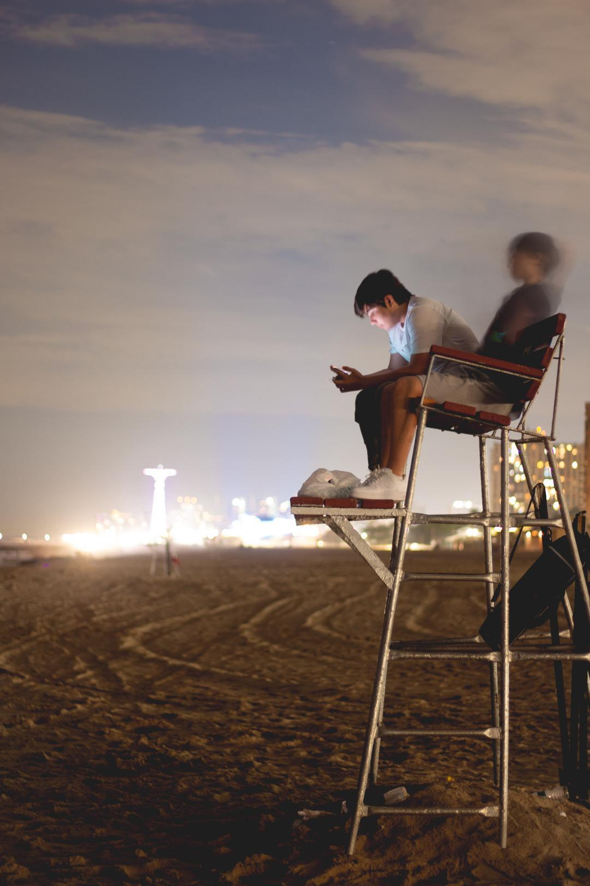
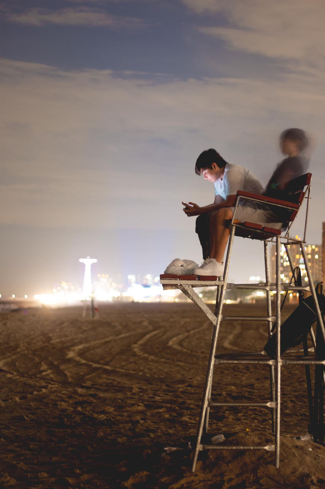
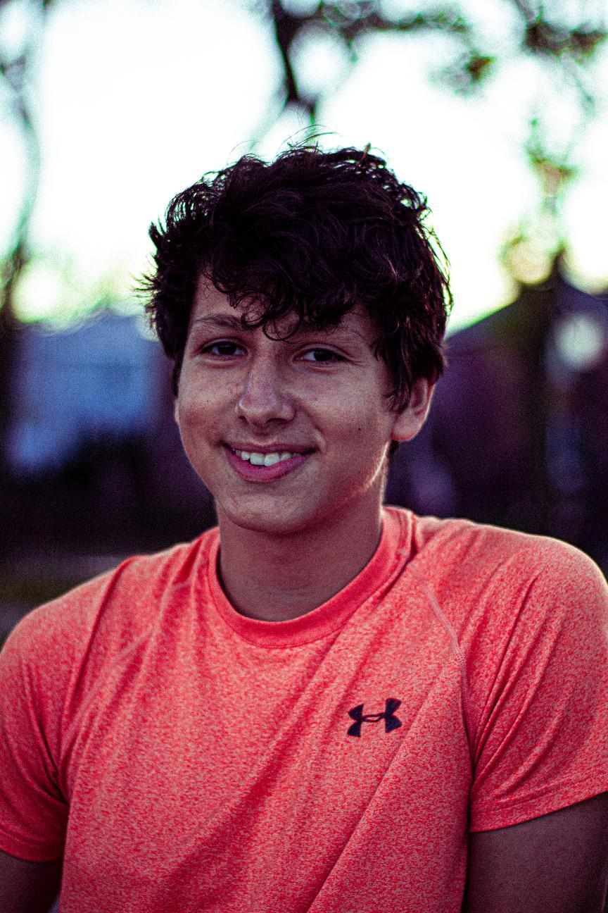
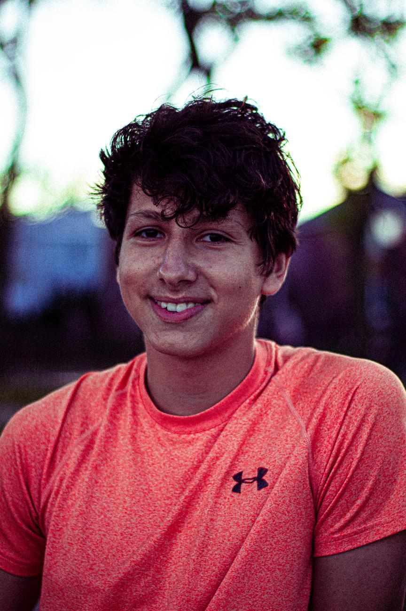

Hey there, my name is Mark. I am a high school student living in New York. I love exploring hidden spots all over New York and photographing my friends. I have worked with various organizations and photographed large group events. Check out my work below and feel free to get in touch!


 

 
